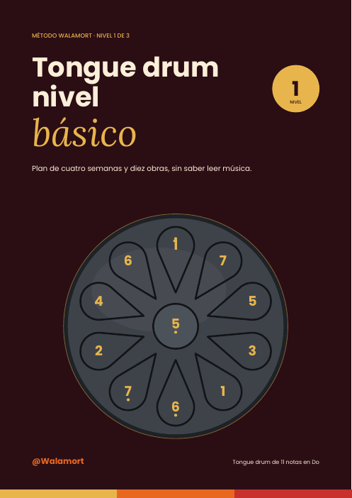
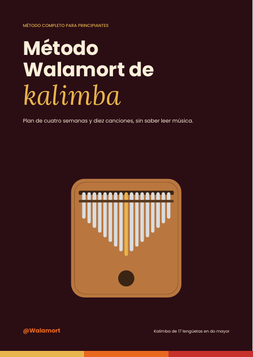

Available · Spanish PDF
Available · Spanish PDFPack Handpan
Three levels from the current collection: beginner, intermediate and advanced. An instrument-focused learning path.
$69.900 COP
Colombia reference verified on 1 November 2026. Hotmart displays currency, terms and the final total before payment.

Available · Spanish PDFPack Tongue drum
Three levels from the current collection: beginner, intermediate and advanced. An instrument-focused learning path.
$69.900 COP
Colombia reference verified on 1 November 2026. Hotmart displays currency, terms and the final total before payment.

Available · Spanish PDFPack Kalimba
Three levels from the current collection: beginner, intermediate and advanced. An instrument-focused learning path.
$69.900 COP
Colombia reference verified on 1 November 2026. Hotmart displays currency, terms and the final total before payment.
 New · Free sample
New · Free sampleApplied harmony
Build triads, relate scale degrees, explore inversions and harmonize a melody.
Five-page Spanish sample. The full pilot workbook has 20 pages: exercises, project, four-week plan and review.
Contents (Spanish)
- Escuchar antes de nombrar
- Nota, altura y duración
- Medir una distancia sin adivinar
- Construye y comprueba una tríada
- Un acorde también depende de su entorno
- Una escala, dos alfabetos
- Tres notas construyen un acorde
- Siete acordes de Do
- Reposo, salida y regreso
- Dos maneras de cerrar
- El bajo cambia la perspectiva
- La menor: dos dominantes
- Acompañar una melodía
- Enlazar sin saltar de más
- Proyecto: ocho compases
- Cuatro semanas de práctica
- Hoja de trabajo
- Respuestas y posibilidades
Pilot edition under editorial review. The full edition is not for sale yet; no price or release date announced.
 New · Free sample
New · Free sampleComposition from a motif
Develop a short idea, shape phrases and create an eight- or twelve-bar miniature.
Five-page Spanish sample. The full pilot workbook has 20 pages: exercises, project, four-week plan and review.
Contents (Spanish)
- Tu idea merece una forma
- Antes de escribir, encuentra el pulso
- De una ocurrencia a un motivo
- Repetir no es quedarse sin ideas
- Convertir una idea en una frase
- Una cuadrícula para escribir
- El motivo: una huella pequeña
- El ritmo también compone
- Dibujar una melodía
- Cambiar una cosa a la vez
- Pregunta y respuesta
- Pocas armonías, muchas decisiones
- Una forma que puedas recordar
- Repartir la atención
- Proyecto: una miniatura propia
- Cuatro semanas para componer
- Hoja para una miniatura
- Revisión y posibilidades
Pilot edition under editorial review. The full edition is not for sale yet; no price or release date announced.
 New · Free sample
New · Free sampleImprovisation with intention
Explore silence, response, pentatonics, target notes and variation with clear constraints.
Five-page Spanish sample. The full pilot workbook has 20 pages: exercises, project, four-week plan and review.
Contents (Spanish)
- Menos notas, más escucha
- Puedes empezar con una sola nota
- Escala y pentatónica, sin misterio
- Llamada y respuesta desde cero
- Qué hacer cuando te pierdes
- Mantener el suelo bajo los pies
- Conversar con tres notas
- El silencio también responde
- Llamar y responder
- Cinco notas para explorar
- Elegir una nota de llegada
- Variar sin perder la idea
- Tocar sobre un recorrido
- Improvisar con alguien
- Proyecto: un minuto con intención
- Cuatro semanas de exploración
- Diario de una improvisación
- Comprobar sin juzgar de más
Pilot edition under editorial review. The full edition is not for sale yet; no price or release date announced.
 New · Free sample
New · Free sampleMusic production: listen and decide
Mixing, EQ, compression, delay, reverb and A/B comparisons connected to the lab.
Five-page Spanish sample. Full 20-page pilot with ten experiments, a plan and an observation sheet.
Full edition under editorial review, not for sale yet.
Contents (Spanish)
- Tu primer banco de pruebas
- Qué es producir una idea musical
- Audio digital, en palabras sencillas
- Volumen, ganancia y margen
- Cómo elegir el primer efecto
- Dibuja el recorrido de la señal
- Nivel: deja espacio para decidir
- EQ: cambiar el color
- Compresión: escuchar la dinámica
- Delay: repetir con intención
- Reverb: sugerir un espacio
- Panorama y balance
- Comparar antes y después
- Trabajar con un archivo propio
- Exportar y documentar
- Cuatro semanas de laboratorio
- Hoja de un experimento
- Respuestas y revisión